原題 : Lossless, Persisted Summarization of Static Callgraph, Points-To and Data-Flow Analysis
目的 :
既存手法の問題 :
解決策 :
結果 :
備考 :
Summary Based :
Compositional (⊂ Summary Based):
本資料ではこれらを区別しない．
Summary based も
compositional の意で用いる．
A. 解析の依存関係を考えてないから．
例えば，テイント解析は様々な解析に依存している．
---> : 解析の依存関係
┌───────────┐ ┌───────────┐ ┌───────────┐ ┌───────┐
│ points-to │<------>│ callgraph │<------│ data-flow │<------│ taint │
└───────────┘ └───────────┘ └───────────┘ └───────┘
|
┌────────────────┐ |
│ type hierarchy │<----------+
└────────────────┘既存手法は この内 taint のみをサマライズしていた．
そのため
points-to 等の解析で WPA (Whole Program Analysis)
が必要である．
これはスケールしない．
---> : 解析の依存関係
════ : サマライズした解析
──── : サマライズしてない解析 (WPA が必要)
┌───────────┐ ┌───────────┐ ┌───────────┐ ╔═══════╗
│ points-to │<------>│ callgraph │<------│ data-flow │<------║ taint ║
└───────────┘ └───────────┘ └───────────┘ ╚═══════╝
|
┌────────────────┐ |
│ type hierarchy │<----------+
└────────────────┘Modalyzer はこれら解析を全てサマライズすることで，この問題に対処する．
---> : 解析の依存関係
════ : サマライズした解析
╔═══════════╗ ╔═══════════╗ ╔═══════════╗ ╔═══════╗
║ points-to ║<------>║ callgraph ║<------║ data-flow ║<------║ taint ║
╚═══════════╝ ╚═══════════╝ ╚═══════════╝ ╚═══════╝
|
╔════════════════╗ |
║ type hierarchy ║<----------+
╚════════════════╝次の4種を対象とする．
新情報 :
想定する攻撃 :
ソース・シンク :
execQuery)#include <iostream>
#include "dbg_sanitizer.hpp"
#include "db.hpp"
using namespace std;
int main(int argc, char **argv) {
auto *con = (new Driver)->connect(/* props */);
auto *stmt = con->createStatement();
string q = "SELECT * FROM ships where id=";
string input = argv[1];
string sanin = applySanitizer(input);
auto *res = stmt->execQuery(q + sanin);
while (res->next())
cout << res->getString("name") << '\n';
delete stmt; delete res; delete con;
return 0;
}struct Sanitizer {
virtual ~Sanitizer() = default;
virtual string sanitize(string &in);
bool isMallicious(string &in);
};#include "sanitizer.hpp"
#include "dbg_sanitizer.hpp"
using namespace std;
string Sanitizer::sanitize(string &in) {
if (isMallicious(in))
in = "(sanitized query)";
return in;
}
bool Sanitizer::isMallicious(string &in) {
return false;
}
string applySanitizer(string &in) {
Sanitizer *s = getGlobalSan();
string out = s->sanitize(in);
return out;
}#pragma once
#include "sanitizer.hpp"
struct DbgSanitizer: Sanitizer {
bool disable = true;
~DbgSanitizer() override = default;
std::string sanitize(std::string &in) override;
};
Sanitizer *getGlobalSan();#include "dbg_sanitizer.hpp"
using namespace std;
string DbgSanitizer::sanitize(string &in) {
if (!disable && isMallicious(in))
throw "malicious input";
return in;
}
Sanitizer *getGlobalSan() {
static Sanitizer *s = new DbgSanitizer;
return s;
}以下の情報についてサマリを作っていく．
予備知識 : c++ の vcall
記法 :
Pointer-assignment graph (PAG) を作る．
ふつう PAG は有向グラフだが， Modalyzer は違うようだ．
おそらく
alias 関係にあるものを線で結んでいる．
論文の図はこれとは違うのだが，解釈に苦しむため改変した．
なぜ isMalicious の返り値 (bool)
がノードとして扱われれているのか解釈不能．
論文の図はこれとは違うのだが，解釈に苦しむため改変した．
なぜ *::sanitize へのエッジが張れるのか不明．
この段階では変数 s の割り当て位置の候補は得られない．
そのため，このようなエッジは張られないはずである．

def walk(f: Function):
if f.is_visited():
return;
f.set_visited(True);
for cs in f.static_call_sites():
cg_c.add_edge(cs, cs.callee())
for cs in f.dynamic_call_sites():
for callee in cs.resolve_dyn_call_sites():
cg_c.add_edge(cs, callee)
update_ptr_info(f, callee)
def make_call_graph():
PI_c = CallGraph()
for f in c.func_defs():
PI_c.append(f.make_pag())
for f in c.public_func_defs():
if not f.is_visited():
cg_c.insert(f)
walk(f)def resolve_dyn_call_sites():
callees = {}
if cs.is_fn_ptr_call():
fptr = cs.get_called_ptr()
rfptrs = fptr.get_reachable_ptrs()
for fp in rfptrs:
if fp.is_boundary():
D[cs] += fp
callees += fptr.reachable_functions()
else: # vptr
aptr = cs.get_allocation_ptr()
raptrs = aptr.get_reachable_ptrs()
for ap in raptrs:
if ap.is_boundary():
D[cs] += ap;
alloc_sites = aptr.reachable_alloc_sites()
for alloc_site in alloc_sites:
alloc_type = alloc_site.allocated_type()
vtable = get_type_hierarchy().get_vtable(alloc_type)
if not vtable:
D[alloc_type] += cs
else:
i = cs.vcall_idx()
callee = vtable[i]
callees += callee
return calleesdef update_ptr_info(f, callee):
cs = (返り値を受け取る変数, 返り値) の集合
cs += (実引数, 仮引数) の集合
PI_c = Graph(
node = PI_c[f].node + PI_c[callee].node,
edge = PI_c[f].edge + PI_c[callee].edge + cs,
)
modptrs = get_vertices_involved_in_graph_op(stitch, PI_c[f], PI_c[callee], cs)
for ptr in modptrs:
if ptr in D:
fmod = get_function_containing(D[ptr])
v.remove(fmod)
walk(callee)関数間データフロー解析をグラフ問題 (CFL-reachability) に帰着する手法．
前提条件 :
嬉しい性質 :
IFDS (Interprocedural Finite Distributive Subset):
IDE (Interprocedural Distributive Environments):
辺の起点が taint されているならば，辺の終点も taint されるという意味
(だろう)． 

グラフをそのまま保持するのは大変なので，サマリを作る．
依存の少ない順，つまり call graph を戻りがけ順で DFS した際の訪問順でサマリを作る．
状況 1/2 : 関数が call graph の葉ノード
全体のサマリを作る．
サマリ前 
サマリ後 (赤線がサマリ) 
状況 2/2 : 関数が call graph の葉ノードでない
関数を呼ぶ手前までのサマリと，関数を呼んだ後の部分のサマリを作る．
サマリ前
サマリ後 (赤線がサマリ，青線はギャップ) 
class Summary {
th: TypeHierarchy,
cg: CallGraph,
pag: PointerAssignmentGraph,
dep: Dependencies,
dflow: Dataflow,
}
def merge(s1: Summary, s2: Summary):
Summary merged = s1;
merged.dep += s2.dep;
merged.dflow += s2.dflow;
merged.pag += s2.pag;
merged.th = contract_same_type_nodes(merged.th, s2.th)
contracted_types = merged.th & s2.th
for t in contracted_types:
if t in merged.dep:
f = get_fn_containing(d[t])
pass # TODO和集合を取る (重複はとり除く)

Call graph
Points-to


合成の流れ :
getGlobalSan の宣言と定義が纏まる．getGlobalSan
の返り値と受け口をつなぐ．s は CG
の依存対象なので， CG を再構築．
walk を使う．このように， CG と PAG の更新は互いに影響し合うので fix-point に到達するまで更新を繰り返す．
Call graph の合成の結果を反映し，新たに判明した実引数・仮引数のペアに辺を張る．
\hookrightarrow^{id} : 副作用がない関数呼び出しを無視
\hookrightarrow^{T} : Meet (union) の挙動を踏まえた “短絡評価”
bar の実装が不明でも
foo の返り値は may-taint といえる．extern string bar(string&);
string foo(bool p) {
string in = userInput();
if (p) return bar(in);
else return in;
}検体 (比較的 vcall の多い物を用意した)
環境
統計手法
検体の特性 :
| Program | Compilation Units | IR LOC lib / IR LOC app | Statements | Pointers | Allocation Sites |
|---|---|---|---|---|---|
| wc | 252 | 41.2 | 63,166 | 10,644 | 396 |
| ls | 253 | 5.9 | 71,712 | 13,200 | 438 |
| cat | 252 | 66.3 | 62,588 | 10,584 | 391 |
| cp | 256 | 10.5 | 67,097 | 11,722 | 443 |
| whoami | 252 | 335.7 | 61,860 | 10,433 | 389 |
| dd | 252 | 16.8 | 65,287 | 11,150 | 408 |
| fold | 252 | 105.8 | 62,201 | 10,509 | 390 |
| join | 252 | 24.9 | 64,196 | 11,042 | 402 |
| kill | 253 | 88.2 | 62,304 | 10,527 | 394 |
| uniq | 252 | 60.1 | 62,663 | 10,650 | 396 |
| MPT | 156 | 13.8 | 1,351,735 | 755,567 | 176,540 |
| PhASAR (driver) | 156 | 56.4 | 1,368,297 | 763,796 | 178,486 |
テイント解析 :
fread,
fgets, …) の結果fwrite, printf,
…)| T: Program | WPA [s] | \sum_{m\in lib} [s] | MWA [s] | ∆ runtimes / (∆ reports) | #CG⟳ | #\hookrightarrow^{id} | #\hookrightarrow^{T} |
|---|---|---|---|---|---|---|---|
| wc | 2.3 | 5.7 | 0.5 | -1.8 / (0) | 47 | 8,052 | 78 |
| ls | 4.8 | 5.7 | 1.3 | -3.5 / (0) | 166 | 13,470 | 11 |
| cat | 1.9 | 5.7 | 0.2 | -1.7 / (0) | 21 | 2,117 | 269 |
| cp | 4.4 | 5.7 | 1.8 | -2.6 / (0) | 197 | 19,712 | 1077 |
| whoami | 2.0 | 5.7 | 0.4 | -1.6 / (0) | 4 | 6,065 | 11 |
| dd | 8.1 | 5.7 | 5.5 | -2.6 / (-3) | 58 | 48,747 | 90 |
| fold | 2.1 | 5.8 | 0.4 | -1.7 / (0) | 12 | 6,695 | 11 |
| join | 2.4 | 5.7 | 0.6 | -1.8 / (0) | 58 | 8,979 | 11 |
| kill | 1.9 | 5.7 | 0.2 | -1.7 / (0) | 14 | 2,079 | 11 |
| uniq | 2.2 | 5.7 | 0.4 | -1.8 / (0) | 29 | 7,281 | 11 |
| MPT | 2,306 | 42,847 | 1,516 | -809 / (0) | 41 | 29,061 | 0 |
| PhASAR | 7,176 | 42,876 | 598 | -6578 / (0) | 3 | 47,736 | 0 |
未初期化変数解析 :
| U: Program | WPA [s] | \sum_{m\in lib} [s] | MWA [s] | ∆ runtimes / (∆ reports) | #CG⟳ | #\hookrightarrow^{id} | #\hookrightarrow^{T} |
|---|---|---|---|---|---|---|---|
| wc | 2.6 | 5.9 | 0.6 | -2.0 / (0) | 47 | 2,413 | 162 |
| ls | 8.4 | 6.0 | 3.3 | -5.1 / (0) | 166 | 7,173 | 184 |
| cat | 2.0 | 6.0 | 0.3 | -1.7 / (0) | 21 | 845 | 12 |
| cp | 5.2 | 5.9 | 2.2 | -3.0 / (0) | 197 | 6,684 | 1122 |
| whoami | 2.0 | 5.9 | 0.3 | -1.7 / (0) | 4 | 535 | 0 |
| dd | 3.1 | 5.9 | 0.9 | -2.2 / (0) | 58 | 2,522 | 16 |
| fold | 2.1 | 6.0 | 0.4 | -1.7 / (0) | 12 | 895 | 0 |
| join | 2.8 | 6.0 | 0.5 | -2.3 / (0) | 58 | 2,582 | 171 |
| kill | 2.2 | 6.0 | 0.4 | -1.8 / (0) | 14 | 793 | 12 |
| uniq | 2.5 | 5.9 | 0.5 | -2.0 / (0) | 29 | 1,433 | 17 |
| MPT | 3,811 | 53,703 | 2,958 | -826 / (0) | 41 | 137,722 | 8,136 |
| PhASAR | 10,160 | 53,348 | 968 | -9,192 / (0) | 3 | 210,032 | 24,446 |
劣らない．むしろ MWA の方が高精度な場合があった．
プロジェクトを占めるライブラリの比率が高いほど，メインの解析時間は短くなる．
平均して 72% の時間削減．
ただし，各モジュールの解析は 3.67 倍掛かる．
サマリサイズはコードサイズの5乗のオーダー．
Modalyzer は non-distributive な問題に対する効能が低い．
現状， points-to 解析の精度が荒い．
コールバックを多用するプログラムへの効能が低いかも．
スコープが違う．
Boomerang は近そう．